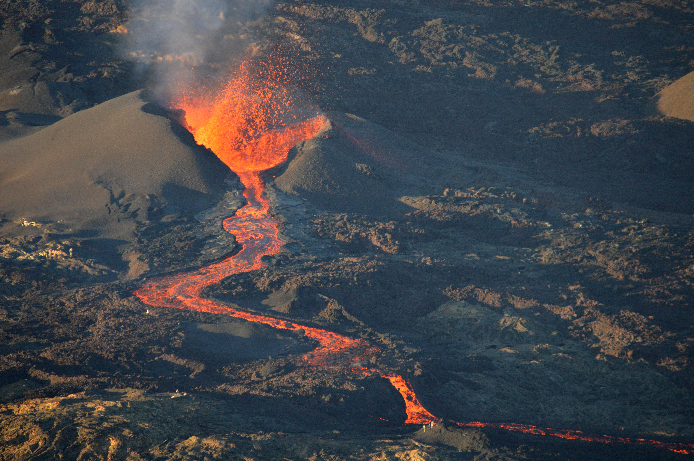

Le Piton de la Fournaise est un volcan en activité offrant un spectacle impressionnant. Il est fascinant pour tous ceux qui rêvent de voir un volcan en éruption, un phénomène naturel inoubliable. Ses paysages lunaires et sa lave en fusion créent une expérience immersive et incomparable pour les amateurs de nature et d'aventure. C'est une occasion rare de s'approcher de l'un des volcans les plus actifs et surveillés au monde. En vous aventurant dans cet environnement unique, vous serez témoin de la puissance de la Terre et découvrirez un lieu où la nature se renouvelle en permanence. Que ce soit pour admirer les coulées de lave ou observer l'activité volcanique à distance, ce site promet un dépaysement total et un spectacle exceptionnel.
